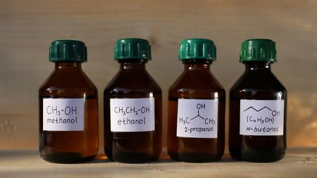

Dung môi

Image source: Topic 2 image sources
| Vietnamese | Dung môi |
|---|---|
| English | Solvent |
| Pronunciation | /ˈsɑːlvənt/ or /ˈsɒlvənt/ |
| Word type | Danh từ (Noun) |
Meaning (Vietnamese)
Chất có khả năng hòa tan chất khác để tạo thành dung dịch.
Meaning (English)
A substance that can dissolve another substance to form a solution.
Example
Ethanol can act as a solvent for some organic compounds.
Another definition from the notes
Substance dissolving another.
Source of information: Topic 2 notes (see Sources)